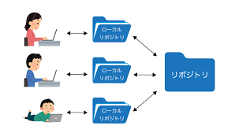
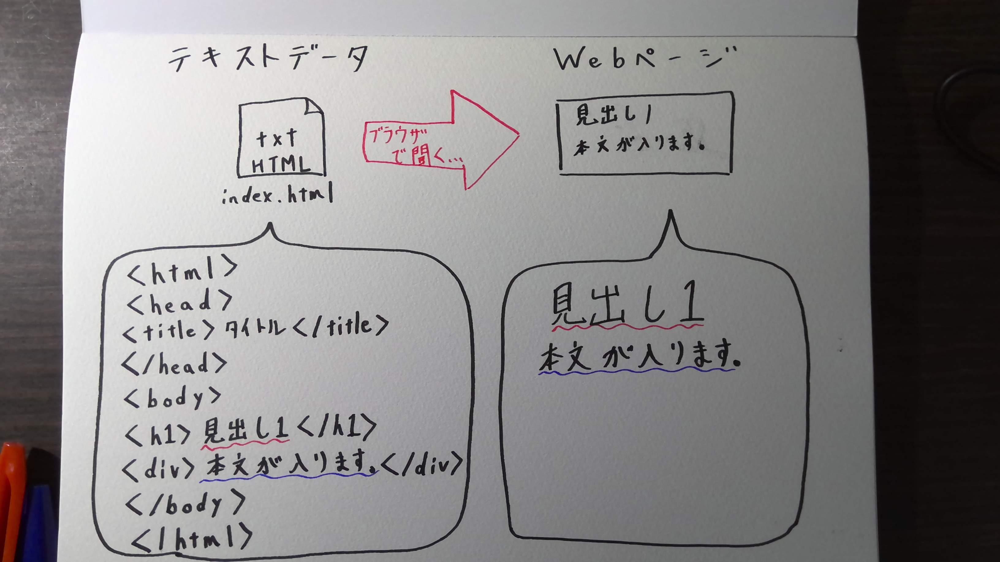

gitとはプログラムソースなどの変更履歴を管理する分散型のバージョン管理システムのことである。
gitで管理しているファイルであれば、コンピュータ上でファイルの編集履歴を管理できるので編集前のファイルを残したまま、新しく編集したファイルを保存することができる。そのため、古いバージョンから新しいバージョンまでの管理が簡単である。また、編集した履歴を複数人で共有できる、複数人で修正した部分を一つに統合できるという特徴がある。
gitにはこのような特徴があるため複数人で開発を行なったり、デバック作業を行うときにミスを減らし効率化できるようになる。

（gitの大まかなイメージ）
上の画像で出てくるリポジトリとは何か？
リポジトリとは簡単に説明すると何かの「保存場所」である。実際に何を保管するかは分野によって変わってくる。
バージョン管理システムにおいてのリポジトリとはファイルとか変更履歴とかを置いておく場所という意味を持つ。バージョンを管理する上で必要なモノの保管場所である。
htmlとはHyper Text Markup Languageの略でありwebページを表示するための言語である。Hyper Textとは「テキストを超えた文章」という意味で、通常のテキストにはない機能を備えたテキストだ。1974年にアメリカの学者テッド・ネルソンが「Ｃomputer Lib」で提言した概念である。
次にMarkupとは普通の文書に目印をつけることで、その部分が文書中でどんな働きをしているかをはっきりさせようというものだ。Markupすることでコンピュータがその文書の構造をうまく分析できるようになる。
またLanguageは英語や仏語のような言語というよりもマークアップをどんなルールで行うかをきちんと決めておくための約束（文法）のようなものである。
htmlはこのような意味を持ち、ネットワークでつながった世界中の文書を関連づけ、それを有益な情報としてコンピュータで分析できるようにすることがhtmlの最も重要な役割である。

(htmlの大まかな流れ）
参考文献
gitの参考文献
リポジトリの参考文献
htmlの参考文献１
htmlの参考文献２
htmlの参考文献３